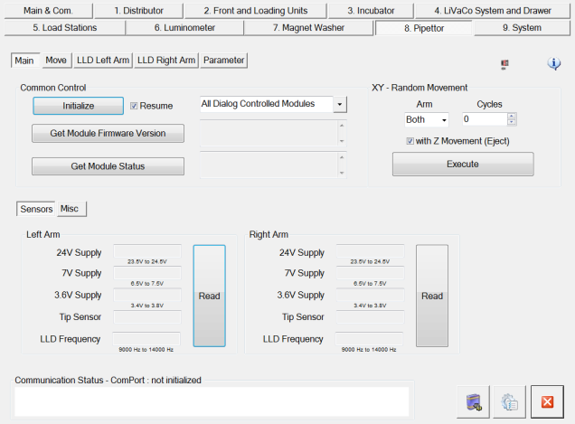
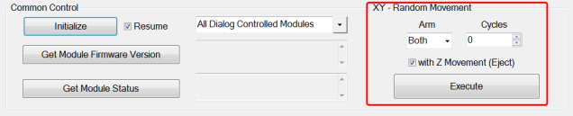
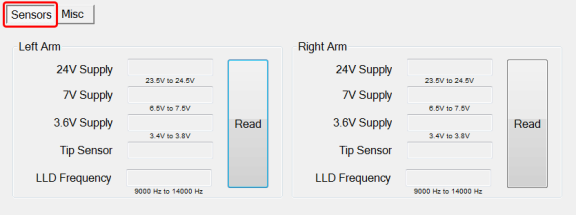
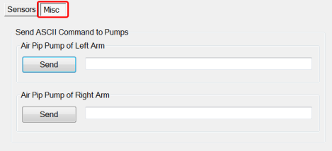
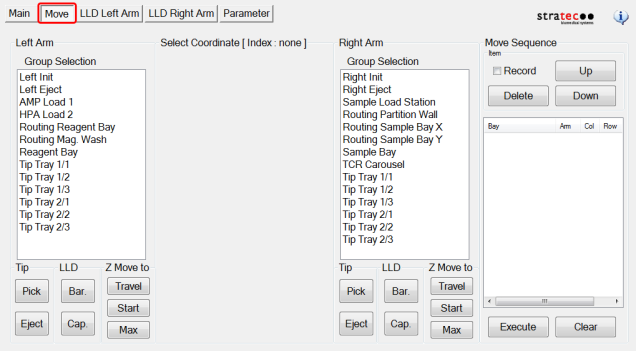
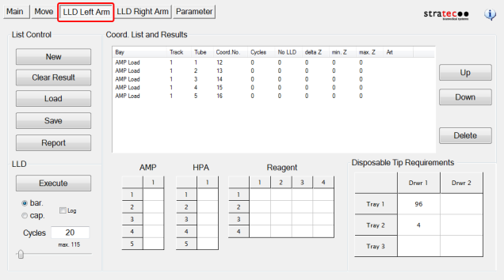
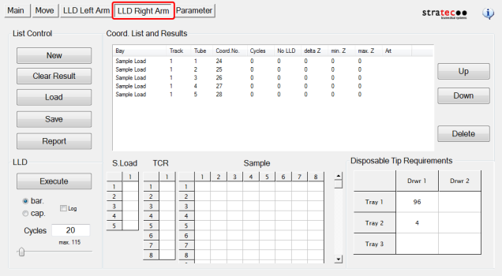
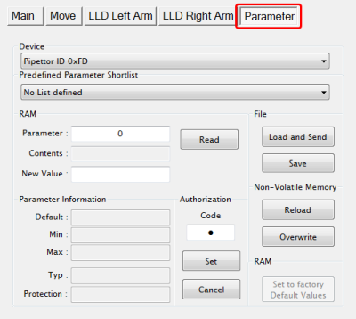

Pipettor
Refer to Common Features for features found on every tab (Common Control, Communication Status, Buttons).
 Main (tab)
Main (tab)

XY Random Movement Select

- Arm (select the Left Arm, Right Arm or both arms
- Cycles (the number of times the arms will cycle)
- With Z Movement (Z movement can be added to the sequence by checking the box)
Sensors

- Left Arm / Right Arm
- Read button (displays voltages to each arm, Tip Sensor status (present or not) and LLD Frequency)
Misc

- Not used by FSE
Move (tab)

- Provides manual arm movement to various positions. It also allows the user to pick, eject tips and perform LLD in the different positions.
- Move Sequence (Allows the user to build move sequences for each arm)
LLD Left Arm (tab)

- List Control - Manage LLD test reports
- Coord. List and Results - Displays LLD test results
- LLD - Select a bLLD or cLLD Capacitive liquid level detection test and the number of cycles
- AMP/HPA Hybridization protection assay—The Hologic HPA technique uses a specific DNA probe, labeled with an acridinium ester detector molecule that emits a chemiluminescent signal./Reagent - Select the station and MTU Multi-tube unit—Container used to process tests in the instrument. An MTU contains five separate reaction tubes. The MTU is moved through the instrument by the linear distributor and includes five tiplets for pipettiing to be used in the mag wash station. tubes or the LLD test
- Disposable Tip Requirements - Displays the number of tips required for the selected test (based on number of cycles)
LLD Right Arm (tab)

- List Control - Manage LLD test reports
- Coord. List and Results - Displays LLD test results
- LLD - Select a bLLD or cLLD test and the number of cycles
- AMP/HPA/Reagent - Select the station and MTU tubes or the LLD test
- Disposable Tip Requirements - Displays the number of tips required for the selected test (based on number of cycles)
Parameter (tab)

- Display any parameter value of the selected Device by entering a Parameter number and clicking the Read button
 button at the top of the page to send feedback, comments, or change requests.
button at the top of the page to send feedback, comments, or change requests.